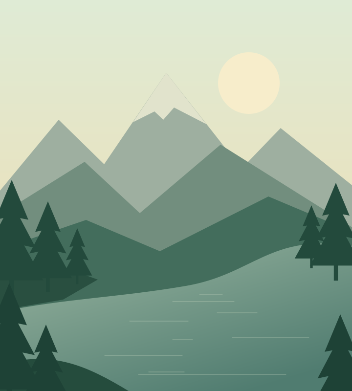

NORTH BEND, WA · FOREST WALK
Leave the noise behind.
Twin Falls pairs a mossy forest path with a waterfall worth slowing down for. Bring a rain layer; the mist is part of the magic.
Explore Twin FallsLess screen time. More green time.
You don’t need a plane ticket to feel far away. Discover small adventures and wide-open spaces, one day trip at a time.
Find your next escapeMade for slow mornings & the scenic route.

A few places to start
Three Washington favorites.
A whole different kind of recharge.
NORTH BEND, WA · FOREST WALK
Twin Falls pairs a mossy forest path with a waterfall worth slowing down for. Bring a rain layer; the mist is part of the magic.
Explore Twin FallsSEATTLE, WA · LAKESIDE LOOP
A thermos, a friend, and the Green Lake loop. An easy city escape with plenty of places to pause and watch the water.
Explore Green LakeNORTH BEND, WA · SUMMIT HIKE
Rattlesnake Ledge climbs through evergreens to a sweeping lake view. Start early, stay back from the edge, and give yourself time.
Explore Rattlesnake LedgeThe fieldnotes philosophy
Adventure doesn’t have to be epic. Sometimes it’s a new trail, a quiet stretch of shore, or lunch with a better view.
Fieldnotes is a small collection of reasons to step outside. Take only photos, leave no trace, and make room for the people who come after you.
A good day starts with a little prep
Before you head out, check the linked park or trail guide for current conditions, closures, and parking passes.